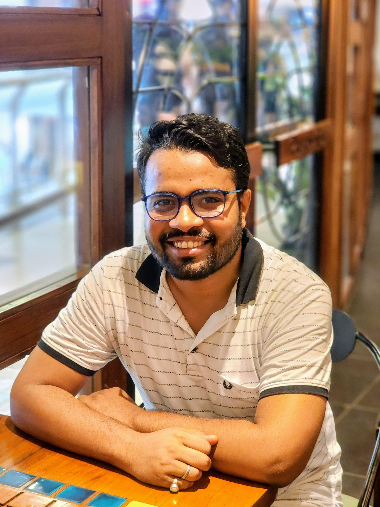

Harsh Raj

Research Scholar | Dept. of EEE, IIT Guwahati
My Portfolio
About Me
I am currently pursuing a Ph.D. at the Indian Institute of Technology Guwahati in the Department of Electronics and Electrical Engineering since July 2022, under Dr. Manoj B. R. Previously, I completed my M.Tech. in Communication and Signal Processing from IIT Ropar (2022) and B.E. from UIT Burdwan (2019).
üì° Research Interests
- Next-generation wireless communication
- Joint sensing and communication (JSAC)
- Intelligent reflecting surface
- Deep learning and machine learning
üìñ Publications
üìÉ Conferences
- H. Raj and B. R. Manoj, "Cascaded channel statistics and target detection analysis for IRS-assisted ISAC employing NOMA," NCC, IIT Delhi, Mar. 2025.
- H. Raj, U. Singh, and B. R. Manoj, "On the performance of IRS-assisted SSK and RPM over Rician fading channels," IEEE VTC-Spring, Singapore, Jun. 2024.